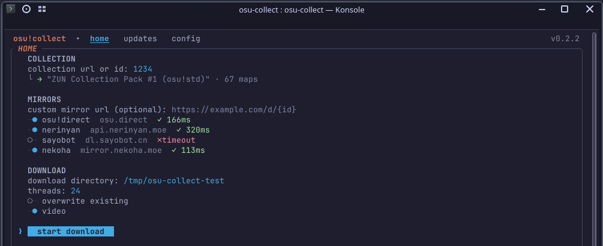
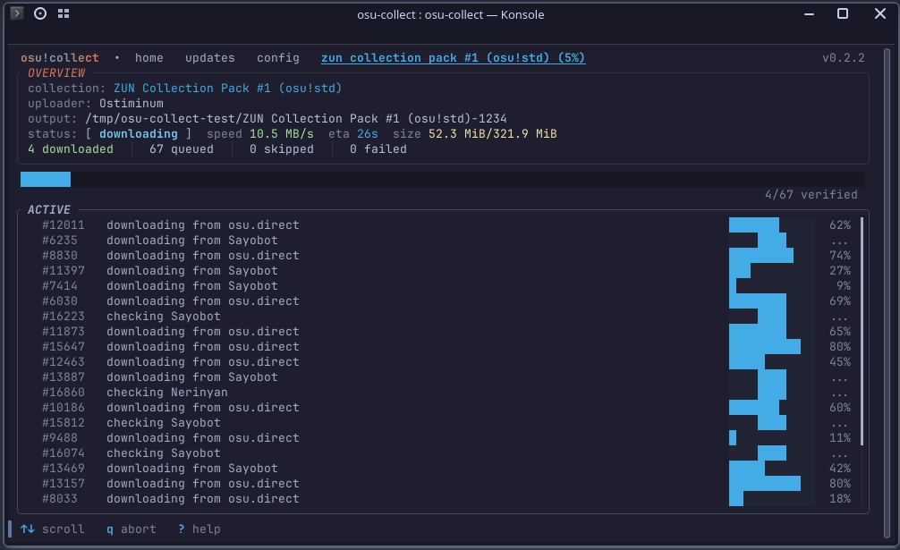

osu!collector downloader
Paste a collection link, press ↵
osu!collect is a free terminal app that batch-downloads osu!collector collections and hands you a ready-to-import collection.db.

curl -fsSL https://raw.githubusercontent.com/uwuclxdy/osu-collect/main/install.sh | bashLinux x64 and macOS Apple Silicon install with that one line. Windows runs a PowerShell one-liner, prebuilt binaries sit on the releases page, and cargo install builds from source on Rust 1.85+.
Works with
Features
Features
One screen downloads collections, searches maps and keeps them current.
Free, no account needed
The official osu!Collector app is paid; osu!collect is free and needs no account.
Nine mirrors, automatic failover
Every collection downloads over nine mirrors in rotation, and keeps running when some mirrors throttle.
Search without a collection
Per-difficulty criteria, auto-routed between the osu! api and nzbasic's community database.
A verified collection.db
An integrity-checked collection.db, ready to import into your preferred osu! client.
Keep collections up to date
Re-check a downloaded collection later and download only new or missing beatmaps.
The flow
Three steps
One collection link is all the input a download needs.
-
Paste a collection link
Copy it from osucollector.com and paste it into the link field, which takes a url or an id.
collection linkosucollector.com1234 -
Pick a directory
Choose the folder the maps and the collection.db land in, and the mirrors to use.
-
Press ↵
Every map batch-downloads using multiple mirrors in rotation with automatic failover, and ? lists every key in-app.

Live per-map progress while a collection downloads.
Alternatives
Comparison
Where osu!collect sits beside the other downloaders.
| Tool | How osu!collect differs |
|---|---|
| osu!Collector desktop client | The official app needs a paid subscription; osu!collect is free. |
| BatchBeatmapDownloader | Downloads by filters and criteria rather than osu!collector collections. |
| osu-collector-dl | A CLI script with no TUI, no collection.db generation, and no updater. |
| OsuCollectionDownloader | Generates .osdb files and needs the .NET runtime. |
| Collection Manager | Manages and merges existing collections; pairs well with osu!collect for stable imports. |
FAQ
Questions
Short answers from the project docs.